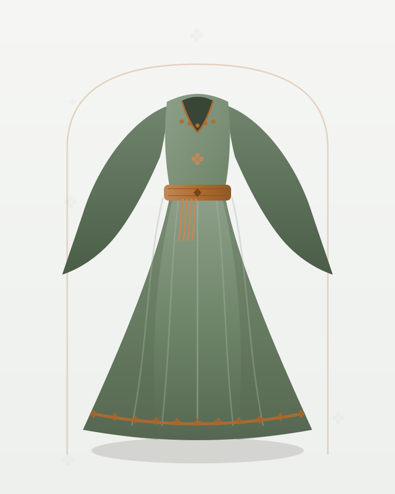

Serhat · Kirasfistan
Serhat Yöresi Jakar Kirasfistan – Adaçayı Gül Desenli
1.690 TL
Ön sipariş tahmini fiyatıdır · KDV dahil
Gül desenli adaçayı jakar kumaştan dikilen, dirsekten genişleyen dökümlü kollu kirasfistan; yayla şenlikleri ve gündüz düğünleri için hafif bir takım.
💡 Henüz satış yapılmıyor. Talep bıraktığınızda bu model, satış başladığında öncelikli olarak üretilecek ve size özel erken erişim tanınacak.
| Kategori | Kirasfistan |
|---|---|
| Yöre | Serhat |
| Kumaş | Jakar |
| Renk | Adaçayı |
| Durum | Ön sipariş (talep toplama aşamasında) |
| Ürün Kodu | KY-SJKAGD-16 |